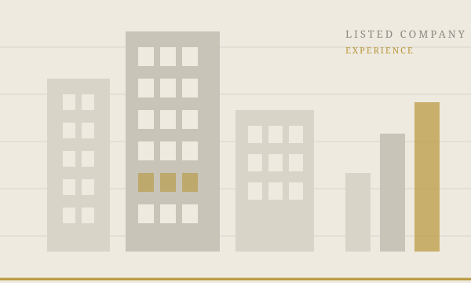
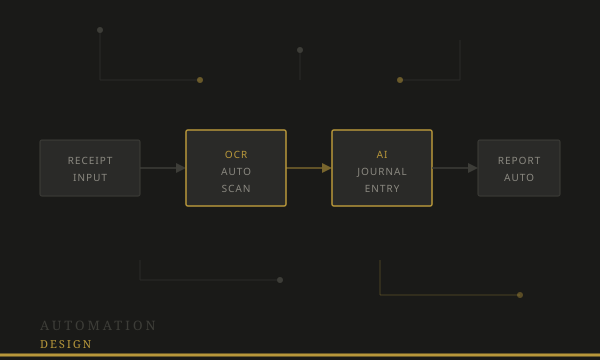
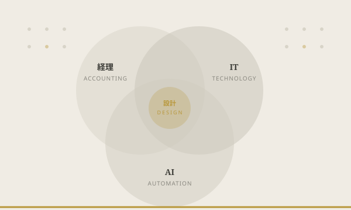
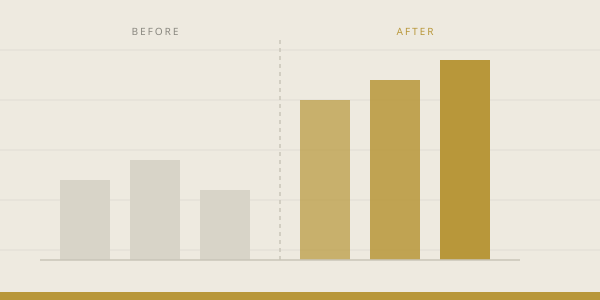
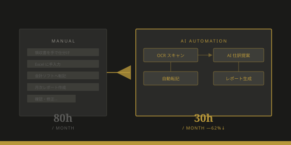
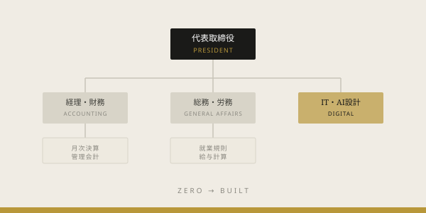

経理・IT・AIを設計して、
社長が数字で経営できる状態をつくる
月次が翌月末まで終わらない。売上はわかるが利益の構造が見えない。経理業務が属人化して誰も休めない——これらはすべて、設計の問題です。
単発の課題解決ではなく、会社全体の管理部門を設計して「自社で回り続ける状態」をつくることを目的にしています。
単発の課題解決ではなく、管理部門の「体制」をつくることを目的にしています。






まずは無料相談で現状をお聞かせください。貴社の状況に合わせた支援内容と費用感をご提示します。
月次早期化・ツール移行・AI自動化設計など、課題を絞った集中支援。3〜6ヶ月で完結。
管理部門全体を継続的に設計・改善。月1〜4回の定例MTGと随時オンライン相談対応。
主に従業員5〜100名、年商1億〜20億円規模の中小企業を中心に支援しています。「これから管理体制を作りたい」創業期から、「今の体制では限界を感じている」成長期の企業まで幅広く対応可能です。
税理士は税務申告のプロであり、管理会計の構築・月次高速化・AI自動化・業務フロー設計は業務範囲外であることがほとんどです。既存の税理士を置き換えるのではなく、「税理士が扱わない経営管理領域」を担います。既存の税理士との連携体制も設計できます。
月次決算の早期化は、着手から3ヶ月以内に改善が見えるケースがほとんどです。管理会計の構築・AI自動化は6ヶ月を目処に形になります。3ヶ月・6ヶ月の目標を最初に明確にして進めます。
むしろそういう状態の会社への支援が最も多いです。「社長が経理も全部やっている」状態から、担当者の採用・育成・業務フロー整備まで一緒に設計します。ゼロからの構築が得意です。
継続顧問の場合、最低3ヶ月からお願いしています。その後は1ヶ月前の申告で解約可能です。「体制が整ったので支援頻度を落としたい」というご要望にも柔軟に対応します。
費用・契約の強制は一切ありません。「うちで相談していいのか？」と迷っている方こそ、お気軽にどうぞ。通常2営業日以内にご連絡します。